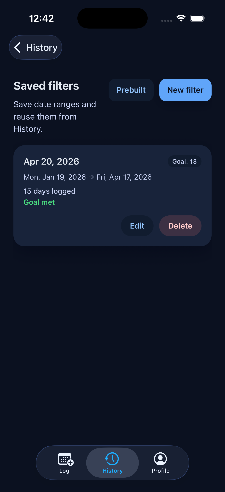
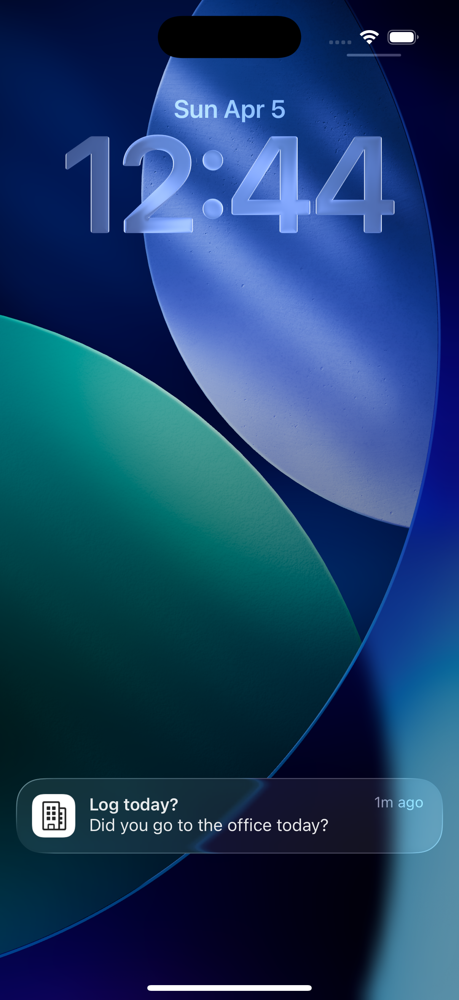

Your office days,
tracked effortlessly.
Log from your iPhone, Apple Watch, a notification, or Siri — InDays keeps it simple.
Log your day
Tap today to log it. Your primary office is attached automatically — change it anytime or pick a different one per entry. Need to catch up? Select up to 14 days at once.

Track your history
See how many days you've been in the office over the last 30 days, 60 days, or a custom range. Filter by location to compare across offices.

Custom filters & goals
Save date ranges as reusable filters and set a target number of in-office days. InDays tracks your progress and tells you when the goal is met.

Log from a notification
Set a daily reminder and log with a single tap — no need to open the app. Your primary office is used automatically.

Apple Watch companion
See today's status, your primary office, and this week's count at a glance. Tap to log right from your wrist — it syncs automatically with your phone.